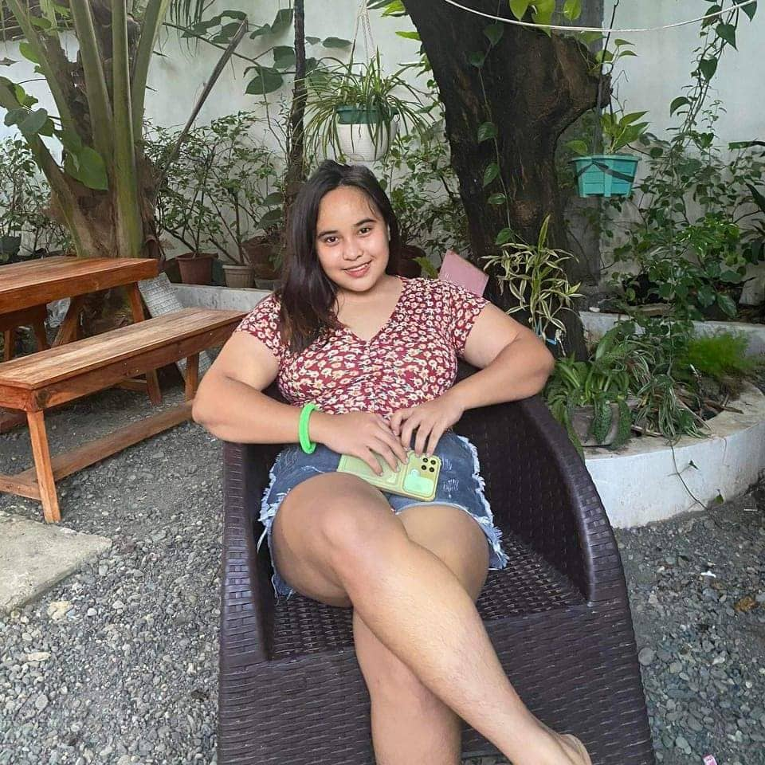
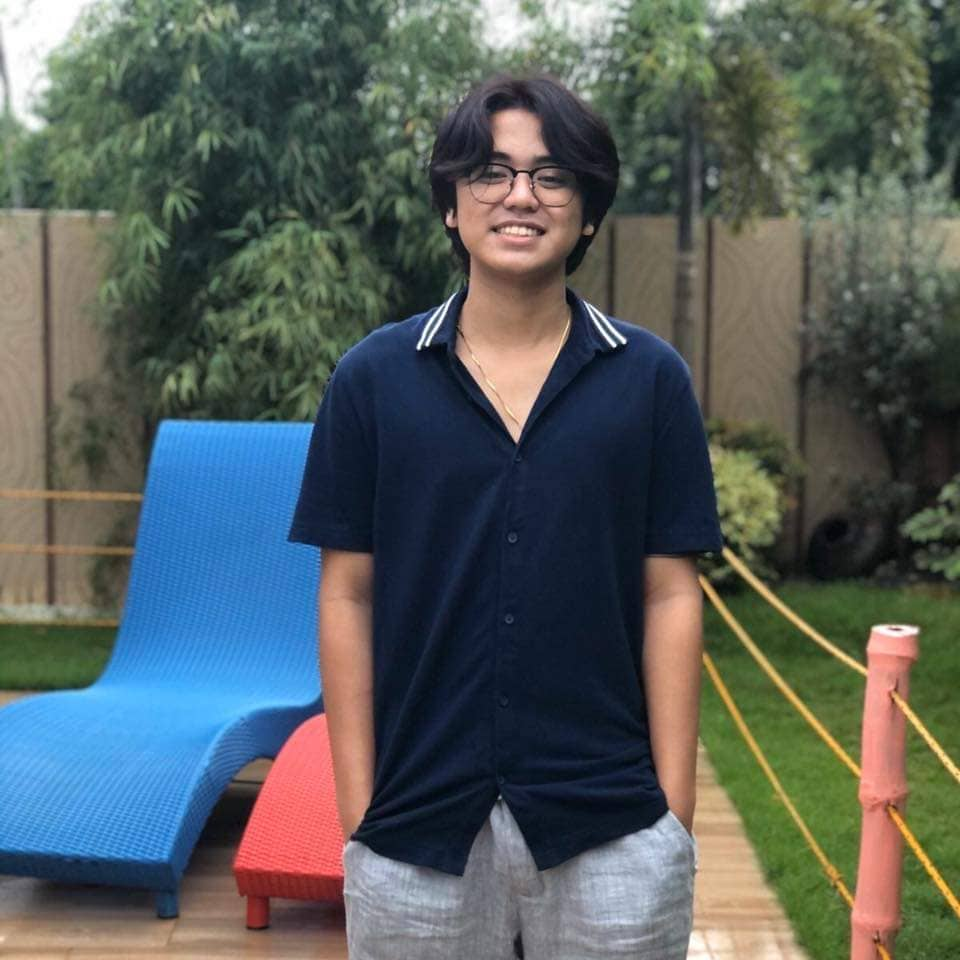
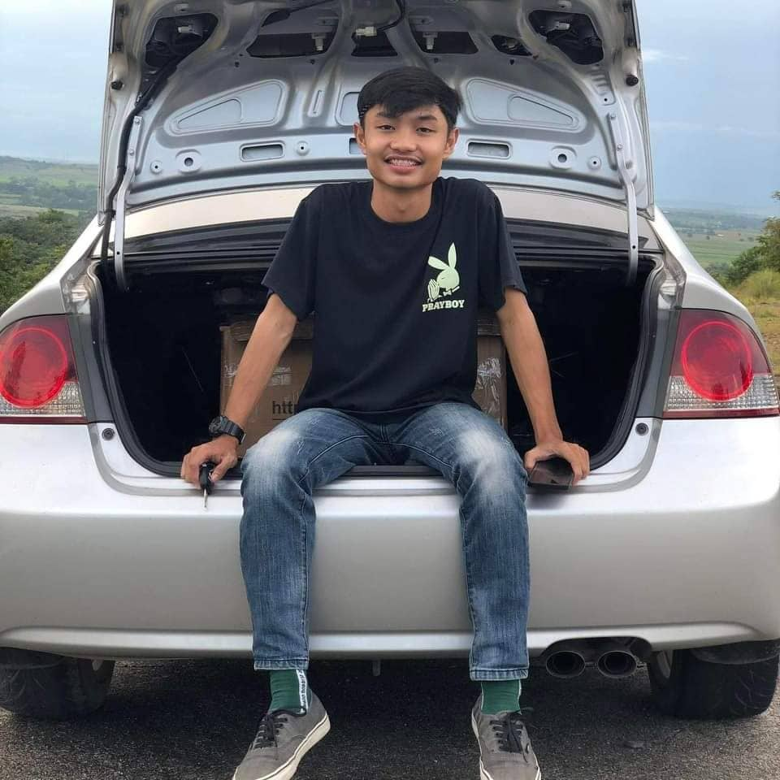

"Ivan is a good person, kind, caring, loving, and God-fearing. He is the type of person that I can rely on when needed. He is generous and he always makes me happy when I am with him."
-Marianne Joy Alamon

"Ivan was a good man, God-fearing, and kind. He also shares good vibes. I say this because I observe it when we are together with the friends."
-Milet Damian
"I know Ivan Jade Lugo as a good friend of mine. One of the best friends ever with me. I salute that friend of mine and I love him very much because of his kindness and for his friendliness."
-Dominic Mamucud
"You are a nice buddy who gets along well with others and is dependable and always present when the other needs you. Besides that, continuously remain vigilant as there are many more people that you can entrust. You're Great listener and adviser. The smartest and most reasonable person I know."
-Michael Gaspar
"Ivan is a generous and cheerful person. he was always smiling and he was an only child. You can't know his true identity until you get along with him. in first impression at first glance, you think he is a very serious person but in fact he is like a clown doing crazy things."
-Mico Balmaceda

"As a friend of Ivan for first year highschool until now, all I can say is he is a very Kind and the one who always smile. He loves his friends as much as he loves his family, he likes to tell jokes and stories to keep the energy going during bonding moments and lastly, Ivan is very close to Papa God, we even call him sometimes “pastor” as a joke."
-Nathaniel Castañeda
"He's brutally honest at times and stands to what he really believes in. A seemingly very silent and intelligent person when you first meet him but as you get to know each other he is a talkative guy but in a good way."
-Kim Genesis

"Ivan is kind, loving, reliable and he is a good friend. Sometimes he treats me free food. love to tell stories and also religious."
-Ian Dalupang